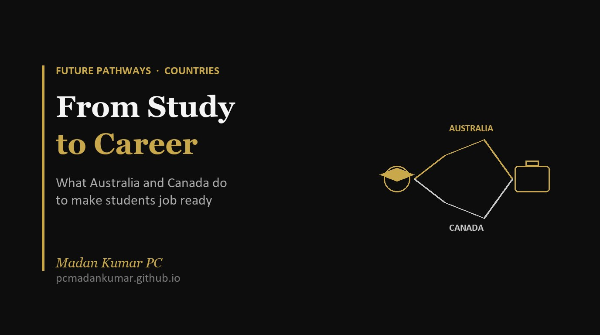

From Study to Career: What Australia and Canada Do to Make International Students Job Ready

Notes and reflections from an IACAC webinar on how universities in Australia and Canada turn a degree into a first job.
Almost every family I counsel about studying abroad asks the same thing in the end. Not “Is it a good university?” but “Will my child get a job after this?”
It is a fair question. So when International ACAC held a webinar called From Study to Career: Supporting International Student Success in Australia and Canada [1], I signed up. Four people who have spent years recruiting international students spoke:
- Lauren Cullen, Saint Mary’s University, Halifax, Canada
- Emily Mancuso, Wilfrid Laurier University, Ontario, Canada
- Freya Krebs, Deakin University, Melbourne, Australia
- Tom Kiefer, Griffith University, Queensland, Australia
Here is what I learnt, and what I think it means for our families.
First, the job market is about skills, not just subjects
The panel began with the World Economic Forum’s latest jobs outlook [2]. AI, big data, cybersecurity and tech skills sit at the top, no surprise there. But employers still badly want people who can think critically, stay curious, bounce back from setbacks and work with others.
Lauren put it simply. AI is changing which skills employers value. It is not removing the need for people. In Canada, demand for social, language and emotional skills has actually grown over the past ten years, even in jobs most exposed to AI.
Emily added a figure every parent should hear. Today’s students may change careers five to ten times in their lives. Not small moves within one field, but full changes. So the best universities are not just training students for a first job. They are teaching them to adapt.
Australia: real work built into the degree
Tom explained that job demand in Australia changes by region, with healthcare, education, engineering and technology leading. Queensland alone expects more than 430,000 job openings by November 2029. About 185,000 of these are new jobs, and around 250,000 come from people retiring or moving on. The Brisbane 2032 Olympics are expected to support more than 91,000 jobs at their peak [1].
The phrase I heard again and again was work integrated learning. It simply means getting real work experience as part of your course. Freya described three forms:
- Placements, like the hours nursing and teaching students must complete to qualify
- Internships with companies, often counted for course credit
- Industry projects, where a company brings a real problem and a student team solves it
Freya summed up employability at Deakin as three things: skills from the course, experience from work integrated learning, and preparation from career services. Every Deakin student joins its careers service, Deakin Talent, and stays a member for life.
Griffith gave concrete examples. Its Creating Better Business course had over 630 final year students working on 26 live projects with more than 50 industry mentors in a single term. Griffith also asks every new student to fill in a career readiness questionnaire at enrolment, so support can be tailored from day one [1].
Tom also pointed counsellors to QILT, an Australian government website that compares universities using independent data on jobs and student satisfaction [3]. At Griffith, 75.8% of international undergraduates were employed four to six months after graduating. I plan to use QILT much more in my own sessions.
Canada: co-op, the paid internship inside the degree
Canada’s big idea is co-op (short for cooperative education). Students alternate between study terms and paid work terms. Lauren shared her own story: two years of study, then four months of paid work, back to class, back to work, and so on. She graduated with twelve months of paid, relevant experience on her CV. Many Canadian employers use co-op to spot future hires.
At Saint Mary’s, every major offers co-op as an option, and each student is paired with an employment officer who helps with applications and interviews. Students also get a co-curricular record, an official university document listing their volunteering, leadership and other experiences beyond marks.
Lauren also mentors in Study and Stay, a Nova Scotia programme that links final year international students with industry mentors, employers and immigration support [4].
Emily’s Laurier example moved me the most. Laurier keeps a set of campus jobs only for international students, through a programme called ISWEP. The reason? Canadian teenagers often arrive at university with part-time work and volunteering behind them. Many international students do not. Laurier saw that gap and decided to close it. Its co-op programme reports a 99% placement rate, more than 1,400 employers, and 92% of graduates in work or further study [1].
What I took away
The degree is only half the story. Every speaker said, in different words, that the students who do well are the ones who use what the university offers, starting early.
Freya’s closing message was the clearest: get involved from week one of year one. Volunteer. Become a student ambassador. Visit the careers office before you think you need it.
Each university gives the same idea a different name. Do not get lost in the labels. Ask the plain question instead: How will my child get real work experience before graduating?
Work rules in brief (checked October 2026)
The panel covered these quickly, so I checked the current official position.
- Australia: Students can work up to 48 hours per fortnight during term [5]. After graduating, eligible students can apply for the Temporary Graduate visa (subclass 485), usually for two to three years depending on the qualification. Applicants generally need to be 35 or under [6][7].
- Canada: Students can work up to 24 hours a week off campus during term, and full time in scheduled breaks [8]. University graduates can apply for a Post Graduation Work Permit of up to three years, in any field. Bachelor’s graduates now also need a language test result at CLB 7 [9][10]. Canada has capped new study permits for 2026 at 408,000, with master’s and PhD students on a separate allocation [11].
Visa rules change often. Please always confirm on the official Australian Home Affairs and Canadian IRCC websites, or with a licensed adviser, before deciding.
For parents
When you compare universities, look past rankings and fees. Ask each one what work experience is built into the course, how many students get placements, and what support exists for international students in particular. A university that answers clearly and with numbers is one that takes careers seriously.
For students
Your degree will open the door. Your experiences will get you through it. Plan to join career services, take up internships or co-op, and keep a record of everything you do outside class. Start in your first term, not your final year.
For counsellors
Add QILT to your toolkit for Australia. For Canada, ask universities whether co-op is optional or compulsory for a course, and how long the work terms are. And keep reminding students that human skills like communication and resilience matter as much as technical ones.
With thanks to Lauren Cullen, Emily Mancuso, Freya Krebs and Tom Kiefer, and to International ACAC for hosting the session.
References
Figures about individual universities (Deakin, Griffith, Laurier, Saint Mary’s) and Queensland job projections are as presented by the panellists in the webinar [1]. Work and visa rules were checked against the sources below on 16 October 2026.
- International ACAC. (2026). From Study to Career: Supporting International Student Success in Australia and Canada [Webinar recording]. Speakers: Lauren Cullen, Emily Mancuso, Freya Krebs, Tom Kiefer. YouTube. https://www.youtube.com/watch?v=s1_Nv4vISSI
- World Economic Forum. (2025). The Future of Jobs Report 2025. https://www.weforum.org/publications/the-future-of-jobs-report-2025/
- Quality Indicators for Learning and Teaching (QILT), Australian Government. ComparED: compare Australian universities. https://qilt.edu.au/comparED
- EduNova. Study and Stay Nova Scotia: Capstone Program. https://studynovascotia.ca/our-programs/study-and-stay/capstone/
- Study Australia, Australian Government. Student visa (subclass 500). https://studyaustralia.gov.au/en/plan-your-move/your-guide-to-visas/student-visa-subclass-500
- Study Australia, Australian Government. Temporary Graduate visa (subclass 485). https://studyaustralia.gov.au/en/plan-your-move/your-guide-to-visas/temporary-graduate-visa-subclass-485
- Department of Home Affairs, Australian Government. Temporary Graduate visa (subclass 485). https://immi.homeaffairs.gov.au/visas/getting-a-visa/visa-listing/temporary-graduate-485
- Immigration, Refugees and Citizenship Canada (IRCC). Work off campus as an international student. https://www.canada.ca/en/immigration-refugees-citizenship/services/study-canada/work/work-off-campus.html
- Immigration, Refugees and Citizenship Canada (IRCC). About the post-graduation work permit (PGWP). https://www.canada.ca/en/immigration-refugees-citizenship/services/study-canada/work/after-graduation/about.html
- SI Laws. (2026, July 2). PGWP Post-Graduation Work Permit Canada 2026: Eligibility, Field Rules and PR Guide. https://silaws.com/pgwp-post-graduation-work-permit-canada-2026-en/
- CIC News. (2025, November). Canada announces 2026 study permit cap, plans 7% reduction in permits issued. https://www.cicnews.com/2025/11/canada-announces-2026-study-permit-cap-1162628.html